One size only - Yours
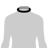
Neck
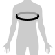
Chest
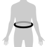
Waist
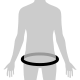
Seat
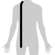
Shirt lenght
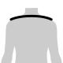
Shoulder width
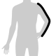
Arm length
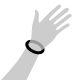
Wrist
 Hip measurement (for the bottoms)
Hip measurement (for the bottoms)
 Seat measurement (for the bottoms)
Seat measurement (for the bottoms)
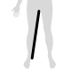
Inseam
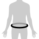
Hip
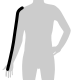
Sleeve length - Jacket and Coat
Sleeve length suit jacket
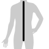
Jacket length